Next: A Tool for Model
Up: Model Checking Method Call
Previous: Specification Language
Specification Patterns
As in the Bandera project [6]
specification patterns are used to facilitate formulating
correctness properties.
These specification patterns concern
temporal properties of method invocations,
and are either temporal patterns
or judgement patterns concerning the invocation of a particular
method.
Below a set of patterns that we have defined,
and which are commonly used,
are given.
To express that within the call of a method  the property
the property  holds
the judgment pattern
holds
the judgment pattern
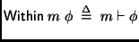
is used.
The property that a call to 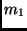 never triggers method 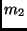
can be specified as:
Next define the temporal patterns (formulas)
(i)
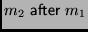,
i.e., can only be called after a call to ;
(ii)
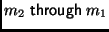,
i.e., can only be called from ;
(iii)
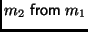,
i.e., can only be called directly from ;
and
(iv)
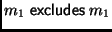, i.e.,
when is called this excludes the possibility that
will later be called;
(v)
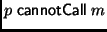, i.e.,
the method cannot be directly
called from any method in package  .
.
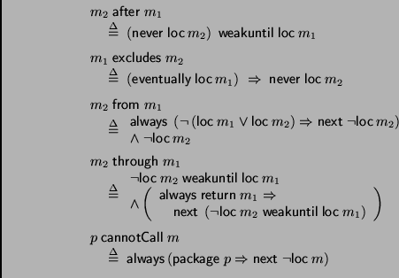
The intuitive idea of the formulation of
is to express that
the current program point can be in method
only because of a direct call from ,
or because it was already in ,
and initially the program point is not in .
The above patterns can be combined with the
pattern.
For example,
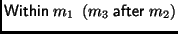
expresses that during a call to the method
will be called only after calling .
An alternative technique for expressing correctness
properties of behaviours of programs of stack-based languages
is to use stack inspection techniques [13].
Essentially these techniques express constraints on
the set of all possible runtime stacks. Note however that
for instance the
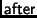 property above
cannot directly be coded as a stack inspection property
since the calls to and need not be concurrent.
Next: A Tool for Model
Up: Model Checking Method Call
Previous: Specification Language
Lars-Ake Fredlund
2002-09-23